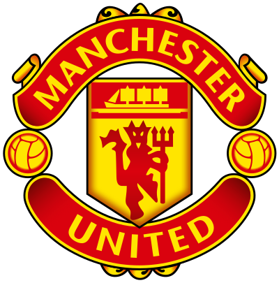
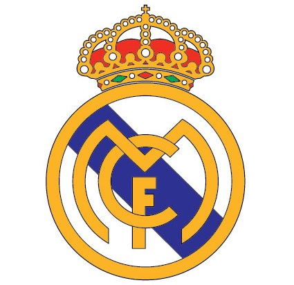
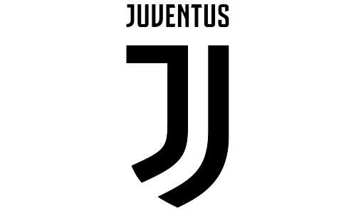

Кріштіа́ну Рона́лду душ Са́нтуш Аве́йру (порт. Cristiano Ronaldo dos Santos Aveiro, нар. 5 лютого 1985, Фуншал,
Мадейра, Португалія) — португальський футболіст, вінгер і нападник італійського «Ювентуса» і збірної Португалії,
у
складі якої є капітаном, а також рекордсменом за кількістю ігор і забитих голів.
П'ятиразовий володар Золотого м'яча 2008, 2013, 2014, 2016 та 2017 років.
Шість разів ставав другим футболістом світу 2007, 2009, 2011, 2012, 2015 та 2018 років. Третій футболіст світу
2019
року.
Чотириразовий володар Золотого бутса УЄФА 2008, 2011, 2014 та 2015 років.
Фіналіст Євро-2004 у складі збірної Португалії. Визнаний найкращим молодим гравцем чемпіонату Європи 2004 року.
Переможець Чемпіонату Європи — 2016 у складі збірної Португалії.
Переможець Ліги чемпіонів УЄФА сезонів 2007—2008, 2013—2014, 2015—2016, 2016—2017 та 2017—2018 років.
Коли хлопцеві виповнилося 18 років, до Португалії на збори приїхав футбольний клуб «Манчестер Юнайтед». Матч
проти
лісабонського «Спортинга» колектив Алекса Фергюсона програв.
Важливу роль у перемозі над «червоними
дияволами»
зіграв Кріштіану. Не дивно, що незабаром відбувся трансфер футболіста в англійський клуб.
З 2003 року Кріштіану Роналду почав грати за нову команду.
Примітно, що хлопець відразу отримав форму з
номером 7.
Раніше «сімку» носили визнані метри світового футболу Брайан Робсон, Ерік Кантона, Джордж Бест і Девід Бекхем.
Клуби за які виступав Роналду :
2003-2009 роки. В сумі забив 84 голи
2009-2018 роки. В сумі забив 311 голів
2018-2021 роки. В сумі забив 72 голи та продовжує свою кар'єру в цій команді
